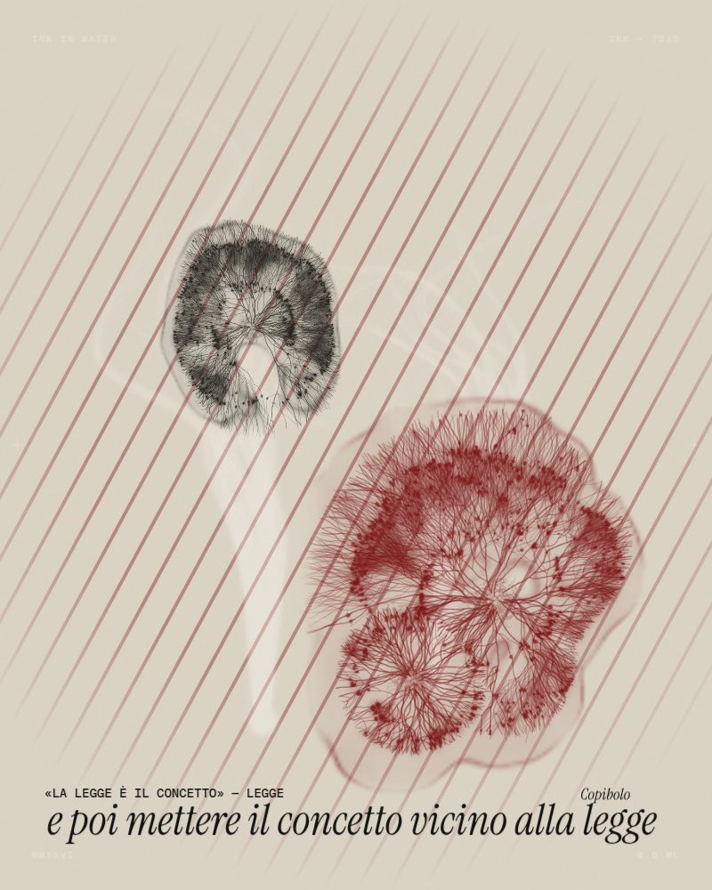

Giorno 1881

E poi mettere il concetto vicino alla legge
ho letto "Tratta"; "tratta" lo capisco solo per definizioni; nel suo significato c'è muratura; ricerca "processo" (esplorare): Chi decide che cos'è processo?; esercizio di varietà: mai fatto prima: materiale nuovo, composizione nuova; enunciato: «e poi mettere il concetto vicino alla legge» (proseguo da ieri: là arrivavo a concetto, da qui vado a legge)
Oggi: concetto. Ho letto "Tratta"; "tratta" lo capisco solo per definizioni; nel suo significato c'è muratura; ricerca "processo" (esplorare): Chi decide che cos'è processo?; esercizio di varietà: mai fatto prima: materiale nuovo, composizione nuova; enunciato: «e poi mettere il concetto vicino alla legge» (proseguo da ieri: là arrivavo a concetto, da qui vado a legge).
Da Wikipedia: «concetto».
Ho scena:pattern, scena:semina, scena:stile, scena:motivi, redazione:griglia, redazione:firma. Ho annullato 2 gesti dopo averli guardati.
Concetto e il suo gap!. Gap!: boomerang.
Ha retto: Tiene l'intenzione: "concetto" si vede (superfici, vuoto, diagonali, squilibrio).
come ne ho discusso con me stesso — la tengo
formale (pro, 1.25): Fuori centro quanto basta: c'è una forza che tira. — regge
occhio (pro, 1.00): Le diagonali (51%) mettono tutto in caduta. — regge
occhio (pro, 1.25): Il vuoto (30%) lavora quanto il pieno. — regge
conservatore (pro, 1.81): Tiene i miei criteri (65%). — regge
intenzione (pro, 2.00): Tiene l'intenzione: "concetto" si vede (superfici, vuoto, diagonali, squilibrio). — regge
intenzione (pro, 0.75): Viene da: Tratta. — regge
coerenza (pro, 1.71): Parla con le tavole di prima su "processo": stessa famiglia, un passo più in là. — regge
formale (pro, 1.25): C'è una struttura: una cosa comanda e attorno c'è spazio. — regge
pubblico (pro, 1.00): Si legge: si capisce cosa sto facendo. — regge
materia (pro, 0.93): Ha una pelle: si sente la materia. — regge